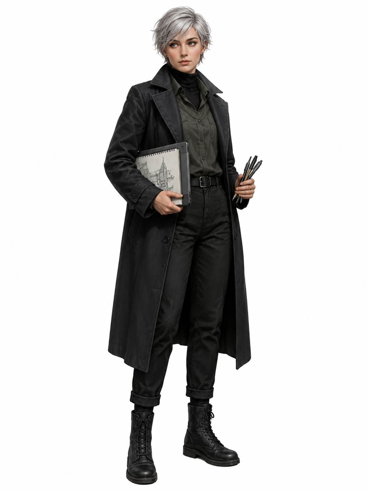
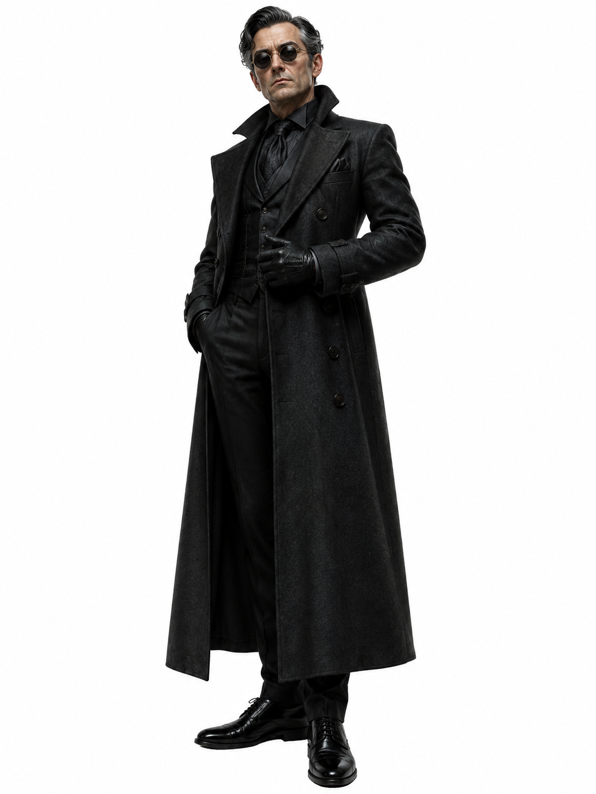

Mara Vintilă
An investigative urban history journalist who refuses to let the city erase itself.
Urban mystery adventure
A broken clocktower, a living tram ticket, and three unlikely guardians of a city that refuses to be forgotten.
Open the visual route mapCast
An investigative urban history journalist who refuses to let the city erase itself.
A repair technician, nervous loyalist, and accidental expert in haunted infrastructure.

An architectural illustrator following the hidden trail left by her grandfather.

A polished collector who claims to preserve memory, but really wants to own it.
Part I
Mara Vintilă had learned that a city could lie in many ways. It could rename a street and pretend the old name had never mattered. It could close a library, sell a cinema, repaint a mural, demolish a house, and call all of it progress. But lately, the city had started lying in a way that felt less political and more impossible.
Three weeks earlier, Mara had photographed a narrow street behind the old courthouse. It had been called Strada Rândunicii, and it had been exactly the sort of place she loved: crooked balconies, tired plaster, a bakery window fogged with sugar and heat, and a stone fountain carved with birds. Two days later, the street was gone. The archive denied it, her map app crashed, and a city official told her that her own photograph was “not possible.”
So, at ten forty-eight on a damp Thursday night, she stood at the abandoned Clocktower Tram Stop with a camera around her neck and a notebook in her hand. Doru “Dodo” Ionescu arrived late, carrying chargers, tools, cables, snacks, and a deep resentment toward any mystery involving public transport after dark. Irina “Rin” Pavel arrived quietly with her sketchbook and her grandfather’s old drawings, one of which showed the same wheel-and-lantern symbol Mara had photographed in the pavement.
The clocktower’s note from Rin’s grandfather read: “The city tells the truth only when both hands point to the same lie.” At 11:11, the clock moved for the first time in years. But before the impossible thing happened, Victor Năstase stepped out from the shadow beneath the timetable board. He was elegant, cold, and far too interested in Rin’s surname.
Victor called himself a collector of urban artifacts and said he wished to protect neglected history. Mara did not trust him. Rin grew uneasy when he admitted he had once tried to buy her grandfather’s notebooks. Dodo decided that anyone with shoes that polished at an abandoned tram stop was probably either rich, dangerous, or both.
When the clock struck 11:11, Victor stepped into the shadow first. Nothing happened. Instead, a rusted slot opened beneath the timetable board and an old paper tram ticket fell at Rin’s feet. It was stamped: “Platform Saint Miro — Transfer Required.” Dodo discovered that the paper ticket had a hidden magnetic strip and a faint electrical pulse. Then Victor tried to take it.
The ticket turned cold in his gloved hand and stamped itself with the words “Passenger Rejected.” A bell rang under the street. The rusted tracks began to shine, and an impossible tram arrived from the dark, its blank route sign glowing like a warning. The doors opened only for Mara, Dodo, and Rin.